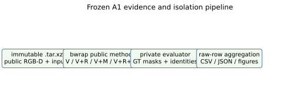
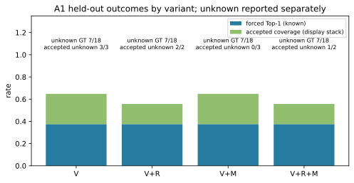
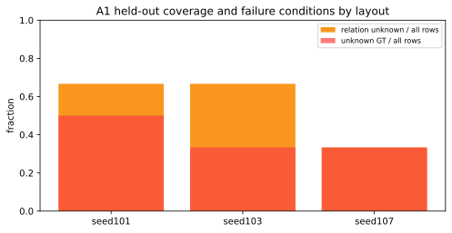

研究稿，非投稿定稿。本文只报告冻结 A1 VisualConf 离线评估，不报告导航、A2 观察位或硬件结果。
本文报告关系约束与去相关多视角证据在家庭场景视觉目标辨识中的一次冻结、隔离评估。公共 VisualConf 方法仅使用 RGB-D、相机内参、经门控的 source-time 自身位姿和冻结检测；私有 evaluator 独立使用可见实例掩码与身份真值。三个留出布局位于同一 AWS Small House，包含 24 个固定观测、6 个查询、4 个预注册变体 V、V+R、V+M、V+R+M，共 72 个变体--查询--布局行和 18 个查询--布局条件。原始私有行显示：每个变体有 11/18 definite GT 行、3/8 已知 forced Top-1 正确；精确 MRR 只在每变体 3 个身份已知行上可算且均为 0，MRR 边界与 accepted 错误率边界仍很宽。结果未显示任何变体优于其他变体；unknown GT、unknown identity 和 relation-unknown 的数量限制了结论。本文提供归档哈希、行字段、生成代码、CSV、SVG/PNG 与离线 HTML，以便复核这一否定性且证据受限的结论。
关键词： 家庭服务机器人；视觉语义导航；指定实例；主动观察；评估隔离；RGB-D
家庭环境中的“找餐桌左侧的椅子”不是类别检测的同义词：同类候选、深度前景、跨视图关联和关系锚点都可能不确定。本研究稿的对象是 A1 VisualConf：在冻结的 RGB-D survey 上，对公共候选轨迹进行视觉 V、关系 R、去相关多视角 M 的排序与接受/弃权。它不控制机器人、不生成路径，也不把任一物体坐标当作导航终点。
本次评估的可回答问题是：在同一固定检测、公共输入和私有评分规则下，加入 R 或 M 是否在留出行上显示可辨识的排序或接受差异？这是描述性问题，不设“应当提升”的成功假设；unknown 必须保留。A2 主动观察、Nav2、碰撞、时延、真实硬件及跨住宅泛化属于后续独立研究，本文没有实验或结论。
VLMaps 将预训练视觉语言特征融入三维重建并支持语言索引空间地图，且其实现要求 RGB、米制深度、位姿和相机标定输入 [1]。它为同编码器的语义候选检索基线提供直接参照，但不等于关系指定实例的终端确认。ConceptGraphs 通过有位姿 RGB-D 序列的多视角关联构建开放词汇三维场景图 [2]；因此，使用对象图或多帧融合本身不构成本文贡献。HOV-SG 已研究建筑、楼层、房间和物体层级的开放词汇场景图与长程导航 [3]，房间约束应被当作已有表示或基线因素。
面向语言和场景上下文的具身导航也并非空白。REVERIE 讨论远程具身视觉指代表达导航与目标落地 [4]，SOON 给出带图探索的场景导向对象导航任务 [5]；二者的预采集仿真、观察和动作假设与本地 Gazebo 底盘、占据地图及新帧确认条件不同，故不直接比较数值。ZSON 给出零样本对象目标导航的多模态目标嵌入参照 [6]，但本文实现并不使用该嵌入评分。CoIN 已把导航中的目标实例不确定性与开放式人机对话结合 [7]，故“检测到不确定就询问用户”不能作为独立创新；本研究首先固定文本输入或将交互单列为对照。
最新核查进一步限制 A2 的表述。SAP-Nav 已采用环状候选观察位、可导航区域筛选、射线可见覆盖、到达后再验证与有限重试 [8]。因此，“环状采样 + 可见性评分 + 新视图验证”不提出新颖性主张；若仅实现其局部公式，只能称为 SAP-Nav-inspired 几何基线，不能称完整复现。本文仅把代价敏感选择、去相关支持、缺失关系证据和最新终点身份不变量作为待测差异，未宣称首创。
RQ1： 对冻结检测产生的候选轨迹，在单住宅三个留出布局中，V、V+R、V+M、V+R+M 的 forced ranking、接受覆盖和不确定性边界分别是什么；这些数据是否支持任一变体优越？这里的 V 是该轨迹全部冻结检测框置信度的最大值：V(t)=max_i confidence_i。
每个 active track 的 M 先将其可用检测按相机二维中心和目标 bearing 分组：若中心距离小于 viewgroup_camera_center_m=0.3 且 bearing 差小于 viewgroup_bearing_deg=20，即归同组。令 d 为组数，e 为各前景世界 XY 中位位置相对其整体中位数的中位距离，δ 为 depth_compatibility_m=0.1 m，则实现为 M(t)=0（d<=1），否则 min(1,(d-1)/2)*exp(-e/δ)。所以近似相同的重复观测不能增加 M。
R 只针对关系查询。公共代码要求恰好一个 active dining-table anchor、至少一个 active chair、每个所需轨迹均有非空 relation surface envelope 且无敏感性几何失败；否则 R 为 unknown，理由为 missing_or_ambiguous_anchor、no_public_candidate 或 perturbation_geometry_failed。以 obs_001 heading 定义 RIGHT-positive、LEFT-negative 横轴；候选与 anchor 的所有敏感表面组合给出区间。left/right 还要求跨越配置 side margin，nearest/farthest 用双向第十百分位表面间隙；区间在 relation_ambiguity_m=0.15 m 内改变顺序时为 relation_order_changes_under_perturbation。只有稳定 winner 的轨迹 R=1，其他可评分候选 R=0。
变体的精确公共分数是所有启用且可用项的算术均值：score(t)=mean([V(t)] + [M(t) if +M] + [R_q(t) if +R and relational and R is known])。因此没有加权 U 项，也没有对 unknown 施加隐藏惩罚；关系 unknown 时 +R 变体仍可强制排序，但接受被拒绝并保留原因。若首两分差小于 top_two_margin=0.05 也拒绝。上述实现事实来自 scripts/a1_visualconf/public.py:280-419，未在留出数据后调参。
平台是受控仿真，不是实物机器人试验。当前真实消费者链为 Gazebo Fortress rgbd_camera -> ros_gz_bridge -> rclpy persistence -> persistent native Pose_V -> source-time interpolation -> reload z-buffer diagnostic -> frozen YOLO-World。运行时容器维持 --network none、ROS_LOCALHOST_ONLY=1、独占 IGN_PARTITION 与 IGN_IP=127.0.0.1；Kuruma 原始 SDF 未被修改。因而以下“真实”仅指真实执行并保存的仿真传感器、原生姿态流和下游解码器，不指真实世界硬件采集。
在 companion-first-pilot.md（验证工作树提交 370b138，相关原始运行标识 a27e139、e8974b6）记录的四个开发视角中，连续原生姿态流对每帧均给出 17 ms 的 source-time bracket、31 个稳定窗样本、最大流间隔 17--18 ms、最大平移 0.48--0.77 mm、最大旋转 0.00177--0.00317 rad；这是已冻结 C3 门槛下的机器人自身仿真位姿条件。它不是定位真值、导航精度或 private TARGET 真值；但经过门控的 source-time self pose 是公开允许输入，D2 公共 consumer 用其和 camera mounting 将深度前景投到世界坐标。private TARGET identity/mask/源位姿从不输入公共方法。
同一记录的重放几何诊断中，预选 overlap_base -> overlap_forward 有 56.82% supported unique-pixel coverage，计有 245 个 behind、97 个 foreground 和 35,782 个描述性 depth-compatible 像素；后者绝对中位残差为 0.000791 m、P95 为 0.02150 m。该 Z-buffer 消费者重放拒绝 nonfinite/相机后点，并以每个目标像素最近源深度处理遮挡。数值只是该受控视角对的描述性诊断，不能被改写为家庭场景几何精度、地图精度、导航精度或视觉方法性能。
独立校准运行在运行时 wrapper 中加入固定绿色 X 平面与蓝色 Y 平面。冻结色掩码后，两个 yaw-zero 视角的 green-X 各超过 135k 像素，轴中位误差为 -0.00996 m 与 -0.01001 m；90 度视角的 blue-Y 为 97,824 像素，中位误差 -0.00994 m。这仅支持运行时声明的 transform/depth convention 在两个独立轴向与朝向上的一致性，不能替代家具环境 accuracy。冻结 YOLO-World 对四张 persistent home RGB 产生 9 个原始框，但无目标身份、关系锚点、准确率或测试划分，故不得从中报告检测性能。
companion-visible-instance-gt.md（提交 370b138；采集接缝 e8974b6）描述的是 evaluator-only acquisition seam。生成的运行时 world 为 87 个家具 include 赋稳定唯一语义 ID，并使用与 RGB-D 共位的 640x480、FOV 1.047、近远裁剪 0.1/8 m、15 Hz segmentation sensor。下游 smoke 实际解码 labels_map：其为 rgb8、640 像素时 step 1920、语义 ID 在三字节通道重复；前景 label 251 存在而后方 250 缺失，符合实际遮挡，而非由框伪造 mask。这是 GT 解码消费端通过的证据。
八个预声明的开发观测 obs_001--obs_008 中，RGB/depth/CameraInfo/labels/colored-map 时间戳相等，且自位姿均通过持续插值稳定门槛；其中若干观测可见多个 ChairA 或 KitchenTable_01_001，SofaC_01_001 出现在四个观测。这些是特权、离线、开发调查，不是 detector 驱动策略、导航轨迹、关系评分或留出测试。公开包只能包含 RGB、米制深度、invalid mask、CameraInfo、source-time self pose 与不透明 observation ID；私有包保存解码 mask、标签映射、源实例位姿和匹配汇总。已执行的负泄漏检查要求公开树不含标签、私有路径、源实例名、源位姿或 GT mask。未来 policy/model 只能挂载公开包，不能访问 label topics、私有包、源 world 或实例元数据。
本次有且仅有 A1 的离线指定实例评估结果。三个 .tar.xz 留出归档各含 8 个固定观测、6 个冻结查询和四个变体，故是 24 个视图、18 个“查询--布局条件”、72 个“变体--查询--布局行”。三个 layout 是同一 TeamSOBITS AWS Small House 的椅子位姿扰动，绝不是三个独立家庭；因此下述统计只作描述，不给出 bootstrap 显著性、置信区间或优越性结论。归档中私有 evaluation.json.rows 是表格唯一数值来源，不能以较早的 paired-summary.json 替代原始行。
实现的变体是 V、V+R、V+M、V+R+M，不是把四者合并成一个“方法”。令轨迹 t 的视觉分数为 V(t)，关系项为 R_q(t)，多视角支持项为 M(t)，并令 U_q(t) 表示任何缺失、污染或扰动不稳定的关系/身份条件。公共方法的排序形式是 s_q(t)=V(t)+I_R R_q(t)+I_M M(t)，其中 I_R、I_M 分别由变体启用；U 不被当成正关系证据。R 的状态可以是 measured、unknown 或 not-required；unknown 的原因直接留在行字段 public_relation_reason。深度前景由 RGB 框、米制深度、无效掩码、地面去除与连通分量产生；轨迹关联使用相机位姿、重投影、深度兼容和阈值门。M 仅对相机中心和方位足够分离的 view group 计入支持，避免把相邻重复帧当独立证据。以上为已实现的启发式分数，并非经校准概率，也未因留出结果调节权重或阈值。
私有 evaluator 先用类别一致且 IoU>=0.5 的确定性一对一最大权匹配将公共检测成分与可见实例关联。一个轨迹只有每个成分匹配同一实例且无未匹配成分时才是 verified；多个实例为 contaminated，任何未匹配成分为 uncertain。私有 observed-surface voxel、obs_001 朝向、双向第十百分位表面间隙和不确定性加宽仅在 evaluator 内产生 Q3--Q6 真值，绝不回流到公共排序。若 GT 不是 definite，所有正确性字段均为 unknown，不可记成功或失败。
对 definite 行，forced Top-1 是强制取首位的结果；若首位身份 uncertain，该行的 forced Top-1 也 unknown。候选召回同样允许 unknown。对于排名，精确 MRR 只定义为 private mrr 非空的已知子集平均值；它绝不可当成所有 definite 行的点估计。每一 definite 行还给出 mrr_lower_bound 与 mrr_upper_bound：下界只把已验证正确候选计入，上界允许最靠前 uncertain 候选可能正确。表中报告这些逐行边界的均值及其分母。
接受（accepted）是公共策略输出 accepted_track_id，并不等同强制排名。accepted_track_id 为空是拒绝而非错误；若接受轨迹的私有身份 uncertain，accepted_correct 为 null。于是 unknown accepted 既不算正确也不算错误。覆盖率的分母为 definite 行；已知错误率下界为 known-wrong/accepted-total，上界为 (known-wrong+accepted-unknown)/accepted-total。没有接受时错误率为不适用。这个定义有意给出宽区间，防止以“没有已知错误”伪称安全。
生成表 results/a1-heldout-by-variant.csv 显示每个变体各有 18 行、11 definite、7 unknown GT。四个变体已知 forced Top-1 都是 3/8=0.375，余下 3 个 definite 行的首位身份不确定，故不应比较为性能差异。V 的 MRR 精确已知子集为 0.000（3/18 行），边界为 0.4697--0.6364；V+R 为 0.000（3/18），0.4621--0.6364；V+M 为 0.000（3/18），0.4697--0.6364；V+R+M 为 0.000（3/18），0.4621--0.6364。精确 MRR 子集太小且所有已知值为零，边界又大量由 uncertain identity 决定，不能把任何差异解释为 R 或 M 的收益。
V 接受 3/11 definite 行，三者均 identity-unknown，错误率界为 0--1；V+R 接受 2/11，同样为 0--1；V+M 接受 3/11，其中已知正确 1、已知错误 2、unknown 0，错误率为 2/3；V+R+M 接受 2/11，其中已知正确 1、unknown 1，错误率界为 0--1/2。四者每个都有 10/18 relation-unknown 行。这些数值不支持“关系项提高定位”“多视角项降低误接受”或任何 established superiority。图 pervariant-outcomes.svg/png 特意将 unknown GT 和 unknown accepted 标在柱外，柱的 stacked display 只为并列显示，不能被读为共同成功率。
按 layout 汇总的 24 行不能跨变体当作 24 个独立任务。seed101 有 12 definite、12 unknown GT；已知 forced Top-1 为 8/12=0.6667，精确 MRR 为 0/4，边界均为 0.6667；无 accepted。relation unknown 是 16/24，归档摘要的主因是 perturbation_geometry_failed。seed103 有 16 definite、8 unknown GT；forced Top-1 为 4/16=0.25，精确 MRR 0/4，边界 0.5--0.5；接受 4/16，其中 2 个已知错误，错误率 0.5；relation unknown 16/24，主因 missing_or_ambiguous_anchor。seed107 有 16 definite、8 unknown GT；仅 4 个 forced Top-1 已知且正确 0，精确 MRR 0/4，边界 0.28125--0.75；接受 6/16，全部 identity-unknown，错误率 0--1；relation unknown 8/24，主因 relation_order_changes_under_perturbation。图 perlayout-failure-coverage.svg/png 分别显示 unknown relation 和 unknown GT 覆盖，不能由其推出布局难度排序。
paired-summary.json 的 mrr_known=0.0 与非零 MRR 边界不是数值不变量失败，而是分母语义不同：精确 MRR 仅对 mrr 非空的身份已知行取均值，而边界对 definite 行的 mrr_lower_bound/mrr_upper_bound 聚合。生成器直接从原始行重算并保存两种分母，以消除“同一指标”这一错误解读。
原始 941ea2d 的 a1-visualconf-dev-v1 含 constant-R、假组件代理和 all-false evaluator，是无效脚手架，绝不作为结果、覆盖率或失败分析来源。留出前修复也必须保留：97cfd31 修正 RIGHT-positive 轴与关系扰动语义，ca8d021 将 MRR 上界改为 max(mrr_lower, uncertain_best)，并写入 v6 冻结配置。它们发生在本次留出归档前；本报告没有重跑、调参、改动方法或 evaluator。
A2、观察位选择、闭环导航、路径/碰撞/接管、端到端延迟、实物迁移和任何 Nav2 成功均没有本包结果。导航部分明确待单独的物理与运动安全结果，不能由这里的固定 survey RGB-D 或离线 evaluator 推出。真实硬件没有运动；家庭图像应本地受控保存，不上传第三方 API。
72 个冻结行没有证明 V、R、M 或其组合的优越性：已知 forced Top-1 在四个变体上相同，精确 MRR 可计算子集极小且为零，accepted 结果包含大量 unknown identity，relation-unknown 也占显著比例。这些是评估覆盖与身份可判定性的限制，不是安全性证据。本文不声称误接受率、安全、导航能力或硬件可用性；A2/导航只可在独立物理和运动安全评估完成后另行讨论。
该研究面对家庭空间和潜在个人图像，应实行最小化采集、受控本地保存、按任务删除或保留审批记录，并明确不把未获授权的图像上传给第三方服务。真实运动不得由闲聊触发；模型输出不得直接给任意速度或坐标。存在不确定、变换过期、地图不一致或无合法视角时，系统应拒绝、停止或要求人工重新确认。仿真隐藏实例标签和源位姿只服务评估，若泄漏到候选选择，将使全部方法结论失效。
局限还包括：当前结果覆盖同一住宅的三个 held-out layouts，但没有跨住宅、多日、多光照或真实世界数据；YOLO 框不等于身份、关系或检测准确率；受控自位姿不代表真实定位；深度 compatible 不证明 same-surface；SAP-Nav 等近期工作使主动视角新颖性主张仍不成立。本文保留零增益和反例，不因结果不支持预期而扩大方法或数据范围。
编辑稿为 docs/paper/thesis.md，八条已引用的一手文献条目在 docs/paper/references.bib。生成入口为 python3 scripts/generate_companion_paper_results.py；它仅以 Python tarfile 读取 artifacts/companion-home-validation/evidence/a1-heldout-results-v6/a1-heldout-seed101.tar.xz、seed103.tar.xz、seed107.tar.xz，读取成员 private-evaluation/evaluation.json 和 receipt.json，不解压或写入历史归档。随后运行 python3 scripts/build_companion_paper_html.py 可得到没有 CDN、没有外部资源的 docs/paper/paper.html。表、原始行、JSON 和 SVG/PNG 图均在 docs/paper/results/；包索引、离线 public bwrap、private evaluator 与 scene regeneration 的正确边界见 docs/paper/README.md。
冻结配置是 config/a1_visualconf_dev_v1.json 的 v6 版本。实际本地配置与资产清单为 config/aws_small_house_companion.json、config/aws_small_house_companion_assets.json、artifacts/companion-home-validation/evidence/MANIFEST.md 和三个 held-out test archives；归档内 capture/models.txt 与 capture/evidence.json 保存运行时模型/证据记录。重放 public consumer 必须使用 scripts/run_a1_heldout_testbatch.py 所构造的只读 /public、/input、/config.json bwrap 边界，随后才允许独立 private evaluator。scene regeneration 使用 scripts/prepare_a1_heldout_layout.py 和 config/a1_heldout_layouts_v1.json，是 renderer-owner 的单独工作；本包不执行它，也不执行模拟、GPU、模型、导航或物理运动。
| 数值或结论 | 归档 SHA-256 与 JSON 字段 | 生成代码提交 | 限制 |
|---|---|---|---|
| 72 行、24 views、18 query-layout conditions、4 variants、3 layouts | 三个 archive SHA 在 results/a1-heldout-results.json.archives[].archive_sha256；private-evaluation/evaluation.json.rows |
结果 JSON 的 code_commit，本地生成器 scripts/generate_companion_paper_results.py |
三 layout 是一个 AWS Small House，不是独立 homes |
| 按变体 Top-1、exact MRR、MRR bounds、accepted 及错误率 bounds | 各 archive private-evaluation/evaluation.json.rows[].forced_top1/mrr/mrr_lower_bound/mrr_upper_bound/accepted_track_id/accepted_correct |
同上；聚合输出 a1-heldout-by-variant.csv |
exact MRR 只在 mrr != null 的 known subset；unknown accepted 不算正确或错误 |
| 按布局 definite/unknown、coverage、relation unknown 与失败原因 | 同一 rows[].gt_status/public_relation_status/public_relation_reason |
同上；a1-heldout-by-layout.csv |
按变体配对，不能将 24 行当独立任务 |
| 归档输出与输入绑定 | archive receipt.json.outputs，尤其 private-evaluation/evaluation.json 与 public-output/method/method.json SHA |
基础执行提交 bb2809d，报告提交由结果 JSON 记录 |
receipt 是冻结工件；生成器不会改写它 |
| source-time pose、两轴校准与私有 GT 隔离 | docs/research/companion-first-pilot.md、companion-visible-instance-gt.md 的命名证据与 archive capture/package 成员 |
这些为持出前消费者接缝，不是 A1 accuracy | 不外推至硬件、导航或物理世界 |
历史 941ea2d 的 development scaffold 含 constant-R、假组件代理和 all-false evaluator，明确排除。留出前的 97cfd31 修正 RIGHT-positive/关系扰动；ca8d021 修正 mrr_upper_bound=max(mrr_lower, uncertain_best)，二者在 v6 结果之前完成。SAP-Nav 的环状候选、可导航筛选、可见覆盖、到达复核重叠仅用于限制新颖性叙述，未在本包复现，也未作为导航成果。

图 1：归档只读，公共方法和私有 evaluator 分离。

图 2：unknown 明确标注，柱形不表示合并成功率。

图 3：三个 layout 属于同一住宅。